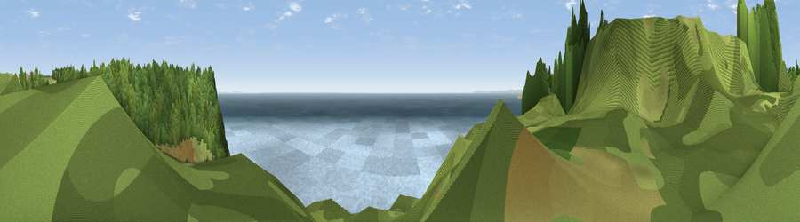

Viewpoint near Salcombe Regis
#1329 in England · top 4% of its area beats it · near Salcombe RegisThe view, rendered

A 360° render of this exact spot computed from the terrain model, tree cover and land cover — summer colours, afternoon light, calibrated against photographs of famous viewpoints. Real trees, hedges and buildings will differ in detail.
The panorama
Grey silhouette: terrain skyline in each direction (720 bearings, Earth curvature and refraction included). Dashed green: skyline with trees (+15 m) and buildings (+8 m) as obstacles. Blue strip: how far the ground is visible on each bearing.
Where the view opens
Wedge length = distance to the farthest visible ground on that bearing (vegetation-aware). Rings at 10, 25 and 50 km.
What fills the view
51% water · 28% woodland · 19% grassland · 1% bare ground
Angular shares of the visible panorama (visual magnitude), not map area. Landscape diversity 0.47 (0–1 Shannon).
Key numbers
More beautiful places nearby
The staircase of upgrades: each row has a higher view potential than everything closer. Driving times are estimates from straight-line distance, calibrated against real road routing — check an actual route before setting out.
| Place | Direction | Drive | Score |
|---|---|---|---|
| Viewpoint near Salcombe Regis | WSW · 1 km | ~3 min | 80.4 |
| Viewpoint near Branscombe | E · 2 km | ~5 min | 81.0 |
| Viewpoint near Sidmouth | WSW · 5 km | ~12 min | 83.0 |
| High Peak | WSW · 6 km | ~13 min | 85.3 |
| Golden Cap | E · 25 km | ~40 min | 88.7 |
| The Knoll | E · 37 km | ~56 min | 91.0 |
50.68671, -3.18869 · source: screening · position refined by local search. Computed location — check access rights before visiting.